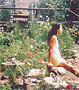
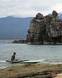
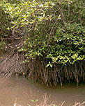
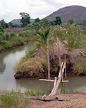
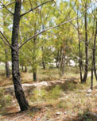
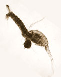

|
 |
 |
Puntos de
Inflexión Ecológica
- Cómo funcionan?
- Transformando círculos viciosos a círculos virtuosos
- Ingredientes para el éxito
- Elaboren sus propios Puntos de Inflexión Ecológica
Historias por Región
Historias por Tema
- Agricultura
- Agua y Cuencas
- Bosques
- Ecosistemas Urbanos
- Educación
- Energía
- Negocios
- Pesquerías
- Salud Pública
Videos Cortos
- Salvando un arrecife coral y una pesquería
(Filipinas) - Revitalizando vecindades urbanas con jardines comunitarios
(Nueva York) - Revirtiendo la deforestación tropical con bosques comunitarios
(Thailandia) - Rellenando aguas subterráneas con captación pluvial
(Rajastán, India) - Escapando la trampa de pesticidas
(India)
Explicando el Éxito
- Salvando un arrecife coral y una pesquería
(Filipinas) - Revitalizando vecindades urbanas con jardines comunitarios
(Nueva York) - Revirtiendo la deforestación tropical con bosques comunitarios
(Thailandia) - Rellenando aguas subterráneas con captación pluvial
(Rajastán, India) - Escapando la trampa de pesticidas
(India)

Ecología Humana: Presenta los principios de la ecología humana que sirven de fundamento a los Puntos de Inflexión Ecológica
Historias de Los Puntos de Inflexión Ecológica

Salvando los
Bosques Nacionales
Japón

Humedales
Artificiales
EUA

Hortalizas
Comunitarias
EUA

La Trampa de los
Pesticidas
India

Santuario
Marino
Filipinas

Gestión de
Manglares
Tailandia

Agroforestería
Comunitaria
Tailandia

Captación
Pluvial
India

Reforestación
Comunitaria
México

Erradicando
el Dengue
Vietnam
Historias Detalladas en Español
- Honduras - La historia de Monte Verde: Erradicación comunitaria de Aedes aegypti (el mosquito responsable de Zika, dengue y chikungunya - Una comunidad humilde utiliza el control biológico para librarse del mosquito y las enfermedades.
- México - Oaxaca - Reforestación Comunitaria en la Región Mixteca - El Centro para el Desarrollo Integral del Campesino recientemente ganó el Premio Goldman por su éxito reforestando suelos altamente erosionados y rescatando la agricultura sustentable tradicional de la región.
- México - Quintana Roo - Agrosilvicultura Sustentable en la Zona Maya - Comunidades Maya aumentaron su seguridad ecológica mediante una cooperativa para la gestión forestal sustentable.
- México - Quintana Roo - La Cooperativa Pesquera de Vigia Chico - Una pequeña y aislada comunidad pesquera en la reserva de la biósfera de Sian Ka'an, en Quintana Roo, desde hace décadas es regional en la captura de langosta, y lo hace de manera sustentable, convirtiéndose en líder ejemplo para el resto del país, y el mundo.
- EUA - New York (New York City) - Guerrilleros Verdes: Jardines Comunitarios Revitalizan Vecindades Urbanas - Las hortalizas comunitarias transforman barrios urbanos en decadencia.
- EUA - California (Arcata) - Humedal Costero Artificial: Una Alternativa Rentable para Tratamiento de Aguas Residuales - Al rechazar una costosa planta regional de tratamiento de aguas residuales, un pueblo transforma un parque industrial abandonado en una marisma que purifica las aguas residuales del municipio.
- Vietnam - Dengue, Copépodos y Control Biológico de Mosquitos - Con participación comunitaria se utiliza un pequeño depredador de larvas de mosquito para erradicar al mosquito transmisor de dengue, librando a millones de personas de dicha enfermedad.
- Japón - Cómo Japón Salvó sus Bosques: El Nacimiento de Silvicultura y Gestión Forestal Comunitaria - Los aldeanos idearon la silvicultura y la gestión forestal comunitaria para rescatar los bosques de la nación.
- India - Andhra Pradesh - El Manejo de Plagas sin Pesticidas para plagas agrícolas: Escapando la Trampa de Pesticidas - Al controlar las plagas sin pesticidas químicos los agricultores salen del envenenamiento y endeudamiento crónicos y retoman el camino de la salud y la esperanza.
- India - Rajasthan - Guerreros de Agua: Restaurando Presas Tradicionales, Captando Lluvia y Rellenando Aguas Subterráneas - El renacimiento de tradicionales represas para captar lluvia recarga el manto freático, transformando un paisaje azotado por sequías.
- Tailandia - Provincia Trang - Recobrando los Manglares con Gestión Comunitaria - Al oponerse a poderosos intereses para proteger un recurso común, se detonó la regeneración social, económica y pesquera.
- Tailandia - Provincia Nakhon Sawan - Restauración de Cuencas Hidráulicas con Agrosilvicultura y Gestión Forestal Comunitaria - La adopción de la agrosilvicultura y la gestión forestal comunitaria habilitó a aldeanos pobres en la optimización de sus recursos, tanto naturales como humanos.
- Filipinas - Isla Apo - El Santuario Marino de la Isla Apo: Restaurando la Pesquería del Arrecife Coral - Un santuario marino rescata a una pesquería y un ecosistema arrecifal al borde del colapso.
Historias Detalladas en Inglés
- China - Biogas - Millions of rural households in China have switched to homemade biogas for cooking, with far-reaching environmental and social benefits.
- EUA - California (Berkeley) - El Patio Escolar Comestible: Conectando Niños a la Tierra y Alentando Hábitos Saludables de Comer - Al reemplazar un estacionamiento con una hortaliza escolar y una cocina, la escuela secundaria Martin Luther King Jr. Middle crea herramientas para la educación y el cambio social.
- EUA - California (Oakland) - Abarrotes del Pueblo: Suministrando Alimento Saludable a Vecindades Pobres - Una tienda de abarrotes móvil trae alimentos frescos a un pobre "desierto alimentario".
- EUA - Hawai (Oahu) - Granja Orgánica Ma'o: Cultivando Alimento y Capacitando Jóvenes - La agricultura orgánica y la educación mejoran la seguridad alimentaria y la situación social de una comunidad marginada.
- EUA - Hawai (Oahu) - Puntos de Inflexión Ecológica en Bahía Hanauma - Una idílica bahía atraviesa dos ciclos de sobreexplotación y preservación.
- EUA - Hawai (Big Island) - El Consejo Pesquero de Hawai Occidental: Un foro para los Interesados de Arrecifes Corales - Diálogo participativo reduce conflicto y mejora la gestión de arrecifes de coral
- EUA - Oregon (Portland) - Ciudad Sustentable - La planificación regional participatoria mitiga el crecimiento desmedido y genera estrategias para un futuro sustentable.
- EUA - Oregon (Portland) - Flexcar: Un Modelo de Autos Compartidos con fin de Lucro - Basado en Portland, Flexcar genera ingresos con alternativas a la posesión de autos.
- EUA - Utah (Salt Lake City) - Planificación Regional mediante Participación Comunitaria: Aprendiendo de Envision Utah - La comunidad dio un giro más sano a su crecimiento urbano con talleres estructurados y basados en mapas, para miles de sus ciudadanos.
- Canadá - British Columbia (Whistler) - Participación Comunitaria para Planificación de un Futuro Sustentable - Una comunidad se une para controlar el crecimiento desmedido y genera un plan de vanguardia para desarrollos turísticos sustentables.
- EUA/Canadá - El Movimiento de Agricultura Orgánica en Norte America: Hacia Agricultura Sustentable - La actual tendencia de dirigir los productos orgánicos hacia el corriente principal es tan solo una etapa en un Punto de Inflexión Ecológica mucho mayor que apunta hacia la agricultura sustentable en Norte América y más allá.
- Alemania - Freiburg - Mejorando sostenibilidad con transporte, energía, manejo de desperdicios, conservación de tierra y una economía verde
- Tailandia - Provincia Nonthaburi - Reutilización y Reciclaje en el Templo Wat Suan Kaew - Wat Suan Kaew Un templo combina la reutilización creativa y el reciclaje, la agricultura sustentable y programas sociales.
- India - Nueva Delhi - Captación Pluvial Urbana - La captación pluvial en la escuela Shri Ram la convierte en pieza clave de un movimiento popular por atender la escasez de agua en Delhi.
- India - Calcutta Oriental - Aprovechándose del Humedal: Aguas Residuales, Pecinas y Agricultura - Las aguas residuales del municipio nutren un sistema integrado de estanques piscícolas y granjas.
- India - Bangalore - Desarrollo Residencial Ecológico - Un pequeño y próspero barrio demuestra como la vivienda ecológica es una alternativa viable a los fraccionamientos insostenibles.
- India - Karnataka - Una Red de Bancos de Semillas y Agricultura Orgánica - Una red de bancos de semillas y proyectos de agricultura orgánica ayudan a los agricultores a revertir la tendencia hacia la extinción de cultivos locales.
Todas Historias Cortas
- Brasil - Curitiba - "Eco-Ciudad" Planificada - Un plan maestro participativo hace de Curitiba una ciudad modelo.
- Brasil - Icapui - Microcréditos - Los microcréditos sirven de alternativa a la sobreexplotación de langosta por parte de pescadores.
- Costa Rica - Talamanca - La Iniciativa Talamanca - Una iniciativa comunitaria multifacética simultáneamente promueve la economía local y la conservación del ecosistema.
- Cuba - Energía Solar Rural - La energía solar trae numerosos beneficios a zonas rurales.
- Cuba - Agricultura Orgánica y Urbana - La crisis económica resulta en el desarrollo acelerado de la autosuficiencia alimentaria.
- Ecuador - La Batalla contra Chevron Texaco - La batalla legal sin precedentes de una comunidad buscando justicia tras lo que se ha llamado una de los desastres ambientales más catastróficos de la historia.
- México - Sonora - La Pesca Sustentable de los Seris - Los indios Seri se desfrutaron de sus derechos territoriales tradicionales en el Mar de Cortéz para desarrollar una sustentable pesquería de peces y moluscos tales como el callo de hacha.
- México - Jalisco - Saneamiento del Río Ayuquila - Las comunidades en la cuenca Río Ayuquila se enfrentaron a la deforestación y polución fluvial para impulsar su paisaje en un camino de salud ecológica.
- México - Michoacán - La Estufa Patsari - El Grupo Interdisciplinario de Tecnología Rural Apropiada diseñó y difundió una estufa de leña con polución mínimo.
- México - Veracruz y Tabasco - Chinampas - Un antiguo sistema de cultivos es resucitado para brindar una agricultura de humedal sustentable a agricultores sin tierras.
- México - Michoacán - Reserva Forestal - Una reserva forestal famosa por sus mariposas Monarcas recluta la participación activa de residentes locales previamente escépticos de proyectos conservacionistas.
- Perú - Plantas Micro-Hidroeléctricas - Comunidades aisladas en el costado oriental de los Andes logran electrificación mediante pequeñas plantas hidroeléctricas ubicadas en ríos y arroyos.
- Perú - Amazonas - Cosechando Productos Forestales - La cría de ranas de flecha venenosa genera incentivos económicos para preservar selva amenazada.
- República Dominicana - Electrificación Rural a base de Energía Solar - Micro-empresas para la instalación de paneles solares se originan en Republica Dominicana y se extienden através de Latinoamérica y otras partes del mundo.
- EUA - Alabama (Condado Hale) - El Estudio Rural - Estudiantes de arquitectura combinan sus estudios con el diseño y creación de vivienda ecológica para sus clientes de bajos ingresos.
- EUA– Alaska – Denali BioTechnologies - Valuable wild blueberries are harvested on deforested land, providing good nutrition and an economic boost to remote villages.
- EUA - California - Distrito de Conservación de Agua y Control de Inundaciones del Condado Napa - El condado Napa trabaja con el principio "ríos vivos" en su plan de control de inundaciones.
- EUA - California (San Francisco) - El Proyecto Hortalizas - La agricultura organica practicada por prisioneros les devuelve su conexión con la tierra y mitiga la reincidencia.
- EUA - California (Morgan Hill) - Accion Femenil para lograr Seguridad Económica - Cooperativas de mujeres generan salarios justos y empleos ambientalmente sanos.
- EUA - California (Los Angeles) - Parque Natural Urbano - El Parque Natural Augustus F. Hawkins transformó un páramo urbano en un ecosistema natural que vincula a los residentes locales con la naturaleza y revitaliza a su comunidad.
- EUA - Colorado (Boulder) - Namaste Solar Electric - Una empresa de celdas fotovoltaicas ofrece energía renovable y un modelo de negocios con conciencia social.
- EUA - Hawai (Isla Grande) - Gestión Forestal Sustentable - El Servicio Forestal, Nature Conservancy y compañías privadas cooperan en una empresa forestal sustentable.
- EUA - Hawai (Oahu) - La Iniciativa de Saunders Sustentable - Estudiantes universitarios lideran el esfuerzo para hacer más sustentable la Universidad de Hawai.
- EUA - Kansas - Land Institute - Restauración de hábitats de llanura en peligro a través de la agricultura sustentable.
- EUA - Louisiana - Estero Nacional Barataria-Terrebonne - Un programa de gestión cooperativa regional revierte la degradación ambiental en el estero más grande de EUA.
- EUA - Massachusetts (Boston) - Nira Rock – Una vieja cantera se transforma en santuario tanto para el pueblo como para fauna silvestre.
- EUA - Minnesota - Restauración del Lago Rojo - Indígenas Norteamericanos restauran arroz silvestre y peces nativos (walleye) en su reserva.
- EUA - New York (New York City) - Melrose Commons - Los residentes evitan ser evacuados con el aburguesamiento de su colonia con una alternativa de desarrollo urbano.
- EUA - New York (New York City) - Protección de Cuenca - La protección de la cuenca es una alternativa rentable a una costosa planta de tratamiento para mejorar la decreciente calidad del agua en la región.
- EUA - Oregon (Portland) - El Centro de Reconstrucción - Una empresa que recicla materiales de construcción prospera en un barrio previamente deprimido económicamente.
- EUA - Texas (Austin) - PODER: El Pueblo Organizado en Defensa de la Tierra y sus Recursos - Un barrio pobre da inicio a un exitoso movimiento ambientalista y de justicia económica.
- EUA - Texas (Austin) - Programas de Edificación Verde y Opción Verde - Proyectos de vivienda optan por la sustentabilidad en sus materiales de construcción y fuente de energía.
- EUA - Texas (Austin) - Programa de Conservación del Cañón Balcones - La ciudad de Austin incorpora hábitats naturales in su planificación urbana para protegerse del crecimiento urbano desmedido.
- EUA - Estado de Washington - Acuicultura Marina de la Nación Lummi - Indígenas Norteamericanos rescatan su reserva con el eco-desarrollo.
- EUA - Varias localidades - Fitoremediación - Plantas y microbios utilizan procesos naturales para purificar aguas residuales.
- Canadá - British Columbia - La Nación Tsleil-Waututh - Una tribu indígena ayuda a restaurar una cuenca degradada, con amplios beneficios ecológicos y económicos.
- Canadá - British Columbia - Cultivo Sustentable de Ostiones - El cultivo de ostiones diversifica la economía y genera incentivos para la protección ambiental.
- Canadá - Northwest Territories - Invernadero Comunitario Inuvik - Un inovador invernadero aumenta la seguridad y autosuficiencia alimentaria en el Ártico.
- Canadá - Nova Scotia - Proyecto Compostero Cero Residuos 2005 - Reciclando residuos orgánicos se ahorra espacio en el relleno sanitario y nutre a la tierra.
- Alemania - Bavaria - Neumarkter Lammsbrau - Una cervecería utiliza un enfoque holístico, de agricultor a consumidor, permitiéndole prosperar mientras otras pequeñas cerveceras quiebran.
- Alemania – Feldheim – Comunidad con Independencia de Energía. Una comunidad se hace independiente mediante energía eólica, solar y biogás.
- Alemania - Freiburg - Eco-Ciudad - La ciudad implementa un enfoque multi-sectorial a la sustentabilidad.
- Alemania - Freiburg-Vauban - Eco-Barrio - La planificación urbana participativa crea un barrio eco-amigable.
- Austria - Vienna - Recolección de Bioresiduos - La recolección de composta a domicilio da un respiro al relleno sanitario y brinda fertilizante a agricultores locales.
- Austria - Wienerburg - Proyecto Greenbelt - Un tiradero se convierte en un agradable espacio verde.
- Bélgica - Hasselt - Ciudad de "Transportación Sensata" - Una ciudad Belga desarrolla alternativas integrales a la construcción de más caminos.
- Holanda - Groningen - "Ciudad Ciclista" - Una ciudad orientada al ciclismo revive la economía y mejora la calidad de vida de sus habitantes.
- Inglaterra - El Barro entre sus Dedos del Pie - El Proyecto Eden ofrece programas para reconectar a los niños con la naturaleza.
- Irlanda - Impuesto a las Bolsas de Plástico - Un ligero gravamen a las bolsas de plástico tiene un gran impacto sobre su consumo y mejora la apariencia de la campiña.
- Rusia - Lago Baikal - Impidiendo Polución con Uranio - Una ONG lucha para proteger al lago más antiguo y más profundo del mundo de un oleoducto y una planta de enriquecimiento de uranio.
- Suecia - Reforma Fiscal Ecológica - La reforma fiscal genera amplios incentivos para la sustentabilidad.
- India - Auroville - "Eco-Ciudad" Planificada - La reforestación y otros proyectos ayudan a crear una comunidad ecológica, transformando un yermo en un paisaje sano y productivo.
- India - Resistencia a la Tala en Chipko - Acciones populares limitan la tala y sus consecuencias destructivas.
- India - Provincia Haryana - Gestion Forestal - La gestión forestal comunitaria mejora el control de la erosión y aumenta la productividad.
- India - Bengal Occidental - Plantación de Té Makaibari - La plantación de té Makaibari estimula al ecosistema natural para mejorar la sustentabilidad de su producción.
- India - Rajasthan (y otros estados) - Centro Artesanal Ranbathore - Una pujante comunidad artesanal revive tradiciones locales y genera empleos alternativos para mujeres en zonas rurales deprimidas.
- India - Rajasthan - "Universidad Descalza" - Un programa aldeano revive la sabiduría tradicional, su autosuficiencia y el desarrollo rural holístico.
- India - Mumbai - Enverdecimiento Industrial - La reforestación en una zona industrial regenera la tierra, el agua, la vida silvestre y la estética del lugar.
- India - Bengal Occidental - Gestión Forestal Conjunta - La cooperación entre gobierno y aldea previene la sobre-explotación de sus recursos compartidos.
- Filipinas - Ciudad Marikina - Renovación Urbana - El plan de un nuevo alcalde por restaurar la viabilidad y orgullo de una empobrecida ciudad industrial.
- Indonesia - Parque Nacional Bunaken - Gestión de Recursos Costeros - La restauración de manglares y el cultivo del bambú brindan sustento alternativo y purifican aguas residuales.
- Tailandia - Pak Mun Dam - Reapertura Experimental de una Presa - La reapertura experimental de la presa Pak Mun Dam revela los costos sociales y ecológicos de las megapresas, y los beneficios de los ríos a las numerosas comunidades que dependen de ellos.
- China - Capacitación de Liderazgo y Cooperación para el Desarrollo Comunitario Sustentable - La Fundación de Armonía (Canadá) enseña El Desarrollo Sustentable a los Alcaldes Chinos y los Residentes de la Comunidad
- China - Provincia Sichuan - Reforestación - La reforestación con acceso local restaura una cuenca degradada.
- China - Gansu - Captación Pluvial - La captación pluvial en una zona árida tiene múltiples beneficios para una region susceptible a sequías.
- China - Sur del Desierto Taklimakan - Árboles Tamarix - Árboles resistentes a la sequía detienen el avance de las dunas sobre tierras agrícolas.
- China - Fuzhou - Tratamiento de Aguas Residuales con Ocean Arks - Un innovador sistema de tratamiento de aguas residuales restaura la calidad de vida a lo largo de un contaminado canal urbano.
- Burkina Faso - Zabre - Proyecto Agroecológico Femenil - Un proyecto agrícola integral mejora la economía y el estatus de mujeres rurales.
- Mozambique - Sanidad Ecológica - La utilización de música para promover el "saneamiento ecológico", un proceso para transformar desechos humanos en un fertilizante agrícola rico en nutrientes, de bajo costo y ecológicamente sustentable.
- Sudáfrica - Trabajando por Agua - Al quitar árboles exóticos de las cuencas, renacen arroyos, incrementa el abasto de agua y se generan empleos.
- Sudáfrica - EcoAldea Thlolengo - Una eco-aldea Africana es un modelo de sustentabilidad rural en tiempos de deterioro rural.
- Sudáfrica - Humedales de Walkerstroom - Ecoturismo - Al proteger praderas y humedales se fomenta el turismo de naturaleza y estimula a la economia local.
- Uganda – El Pozo de Ryan – Un muchacho de seis años inicia un movimiento para segura agua potable en África.
- Uganda - Control del SIDA - Un enfoque holístico hace un ejemplo de los esfuerzos para controlar el SIDA en Uganda.
- Zambia - Transformando Comunidades con el Desarrollo Sustentable - Un programa de conservación de vida silvestre y desarrollo comunitario protege la biodiversidad mientras mejora la vida en las aldeas de la región.
- Zimbabwe - Micro-hidroeléctricas - Las plantas micro-hidroeléctricas proporcionan energía de bajo impacto a aldeas rurales.
- Zimbabwe – Cultivando el Agua – Mediante "agricultura hidráulica" la granja de Phiri Maseko es un paraíso que resiste sequías durante años.
- Australia - Una Casa Sustentable in la Ciudad - Una pequeña familia urbana remodela su cien-años-de-edad casa para lograr autosuficiencia respecto al agua y la energía.
- Islas Fiji y Cook - Restauración de la Pesquería Costera - Reservas y vedas restauran a una pesquería costera en deterioro.
- Vanuatu - Aceite de Coco como Combustible Alterno - Mientras cae el precio de la copra y sube el del petróleo, el aceite de coco es un prometedor combustible "biodiesel".
Este sitio web contiene materia traducida del sitio web www.ecotippingpoints.org.
Traducción: David Nuñez. Redacción: Gerry Marten